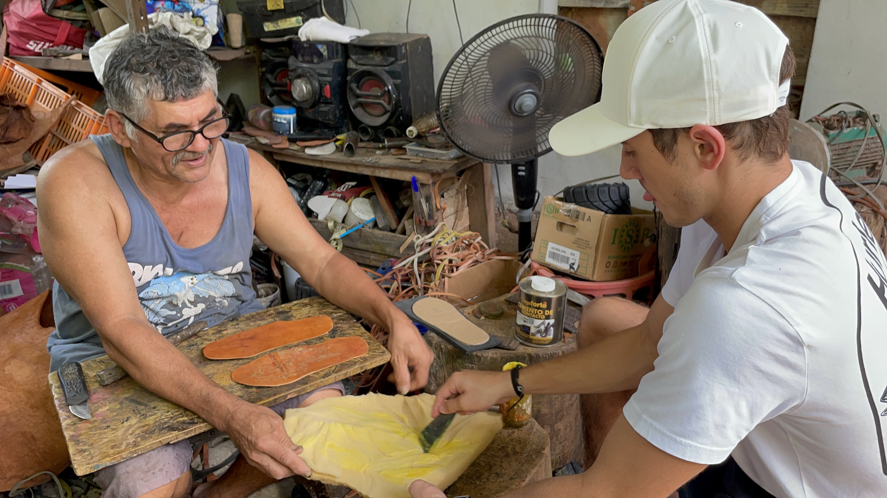
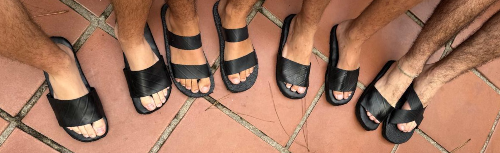
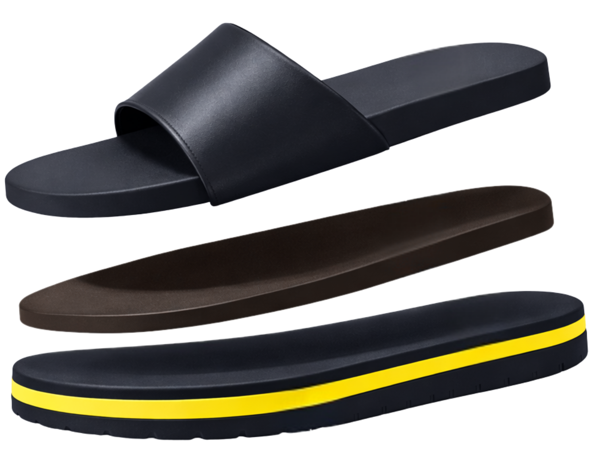
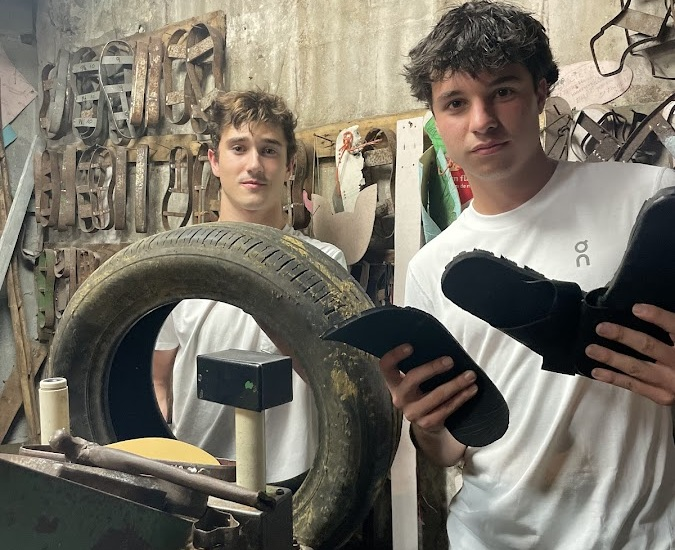
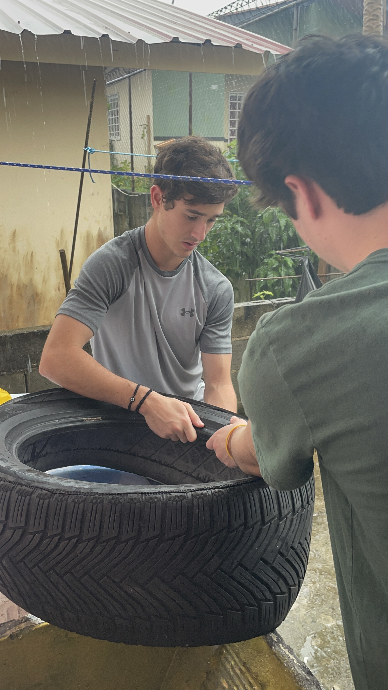
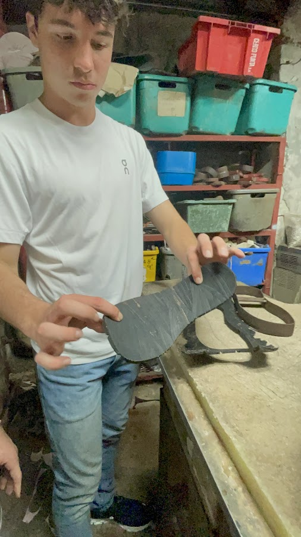
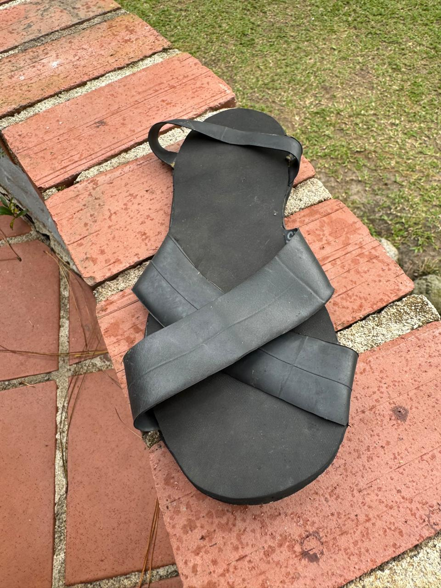
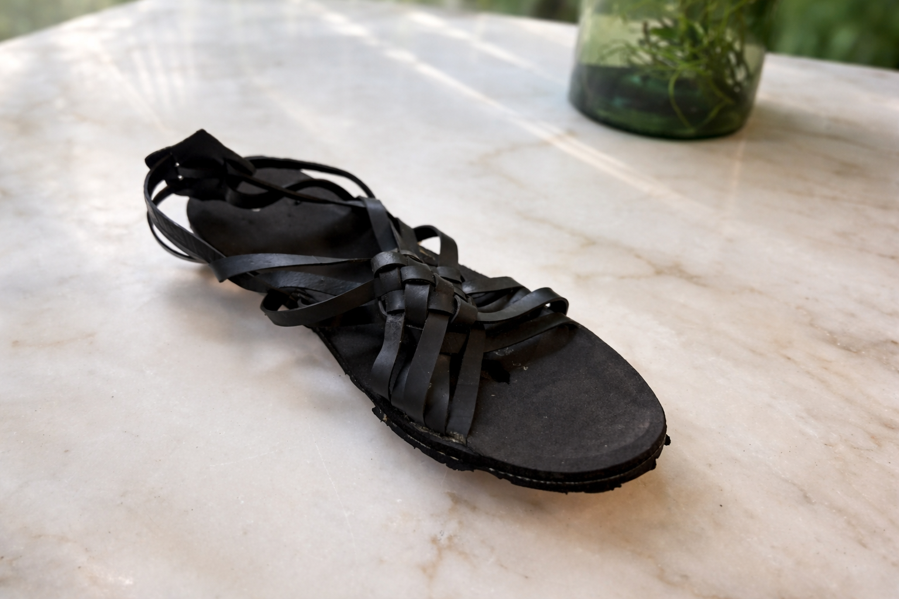
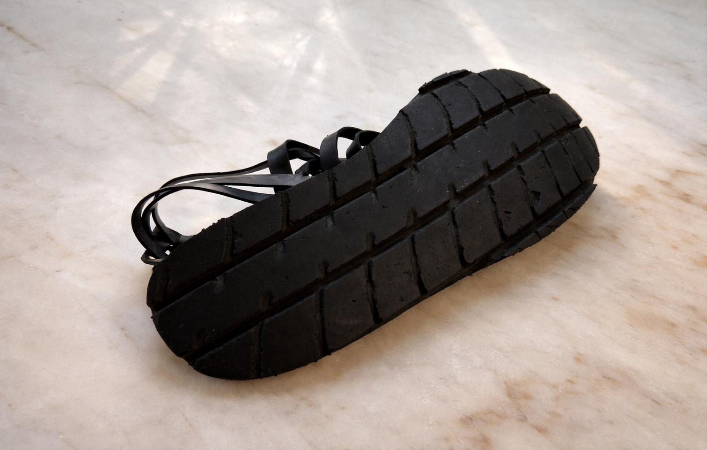

Caucho de llantas recicladas
Reutilizamos el caucho de llantas para crear una suela resistente y duradera.
NUESTRA SOLUCIÓN
EcoSlidespty transforma llantas desechadas en calzado cómodo y duradero, creado mediante pruebas prácticas y diseñado para el movimiento diario.

CÓMO SE ELABORA

Nuestro proceso reutiliza materiales principales: caucho de llantas recicladas, correas de cuero y plantillas de caucho.
MODELO
Una construcción sencilla: caucho reciclado + diseño inteligente + mejora continua.
Reutilizamos el caucho de llantas para crear una suela resistente y duradera.
Probamos prototipos para mejorar la comodidad, el ajuste y el uso diario.

Un proceso práctico que puede crecer manteniendo la calidad y un menor impacto.
Transformar residuos en un producto útil ayuda a reducir el abandono y la quema de llantas.
BENEFICIOS
EcoSlidespty combina funcionalidad y propósito en un producto sencillo.
El caucho de las llantas es resistente por naturaleza, ideal para una suela duradera.
Mejoradas mediante el uso real, con atención al ajuste y la comodidad diaria.
Reutilizar llantas ayuda a reducir los residuos y la contaminación.
La producción sencilla apoya la artesanía local y permite crecer de forma práctica.
MATERIALES Y PROCESO
Descubre cómo recolectamos, limpiamos y transformamos llantas usadas en sandalias sostenibles hechas a mano para la comodidad diaria.
→ Desliza hacia abajo para comenzar

01 Recolectar y seleccionar
Recolectamos llantas desechadas y seleccionamos las secciones de caucho adecuadas para crear suelas resistentes.

02 Seleccionar llantas
Elegimos las mejores secciones de llanta para garantizar durabilidad y seguridad.
03 Cortar los laterales
Retiramos los laterales para obtener secciones de caucho resistentes y aptas para trabajar.
04 Marcar la plantilla
Marcamos el contorno de la sandalia para mantener tallas y ajustes uniformes.

05 Revisar la plantilla
Revisamos la forma y la talla antes de cortar.
06 Lijar y alisar
Lijamos bordes y superficies para mejorar la comodidad y la durabilidad.
07 Ajustar correas
Preparamos y ajustamos las correas para aportar comodidad y resistencia.
08 Martillar y ajustar
Fijamos los componentes y comprobamos la colocación de las correas.
09 Ensamblar
Ensamblamos cada par a mano y perfeccionamos su ajuste.
10 Revisión final
Revisamos la comodidad, la durabilidad y los acabados para que cada par esté listo para usar y dure mucho tiempo.
PROTOTIPOS
Cada par da una segunda vida al caucho desechado, reduce los residuos y la contaminación por microplásticos de su degradación, y celebra la artesanía con un calzado cómodo.

EcoSlidespty comenzó con un experimento sencillo y una firme convicción: los residuos pueden tener una nueva vida.
Nuestro punto de partida: diseñado para ser estable y duradero, y perfeccionado en modelos posteriores para mejorar la comodidad y el ajuste.
Después del primer prototipo, perfeccionamos los diseños para mejorar la sujeción, la comodidad y la versatilidad, manteniendo nuestra misión de reutilizar tiras de llanta para crear calzado duradero.

Un diseño seguro para el día a día. Las tiras de llanta cruzadas distribuyen la presión y mejoran la sujeción y la comodidad.

Fácil de poner y quitar. Dos correas de caucho de llanta ofrecen una apariencia sencilla y una sujeción confiable para el día a día.

Minimalista y resistente. Una correa sencilla y tracción de caucho de llanta para actividades al aire libre y superficies más irregulares.
Un homenaje a la tradición, reinventado con tiras de llanta, donde la identidad local se encuentra con el diseño circular.


Un clásico cultural reinventado con tiras de llanta para honrar la tradición y reducir los residuos.

¿Quieres conocer los próximos diseños? Probamos los ajustes y mejoramos la comodidad con cada prototipo.
Contáctanos